Optimal planning and operation
with sequential Gauss–Seidel + Anderson PF
P1-style objectives on the reconstructed P3 25-bus HVAC / LFAC / MTDC network, with a compiled PF solver and independently checked electrical states.
Completed: 10 planning points, 72 hourly A/B/C points, dispatch tables, multi-objective tradeoffs and full-OPF timing comparisons.
Scope: an adapted, balanced positive-sequence benchmark using disclosed ratings and a synthetic day. This is not the authors’ exact data/code reproduction, an unbalanced multiphase model, or an equipment-design certification. Solutions are local NLP results.
1. What is being optimized, and why PF sits inside OPF
Power flow answers: given controls, what electrical state follows? The optimizer answers: which feasible controls reduce the objective? We use P1’s planning/operation distinction and P3-inspired sequential PF to evaluate each candidate. Gauss–Seidel and Anderson solve the state equations; SLSQP chooses the controls. Numba speeds up those numerical calculations and does not change the objective.
| Quantity | Decision / dependent role |
|---|---|
| Planning | 20 controls: five HVAC Pg, VSC5 P, five VSC Q, LF frequency, LF rated kV, seven generator Vm |
| Operation B | 18 controls: planning controls with rated kV and frequency fixed |
| Operation C | 19 controls: planning controls with rated kV fixed |
| Fixed obligations | LF generator bus 20: 200 MW; VSC1: −200 MW; VSC3: +100 MW |
| Voltage setpoints | VSC2 PCC bus 17: 0.985 p.u.; LF reference bus 21: 1 p.u.; DC reference bus 24: 1 p.u. |
| Dependent outputs | PQ bus V/θ, PV bus Q, slack P/Q, VSC2/4/7 P, VSC2/6 Q, DC voltages and losses |
Planning trades lower operating losses against lower voltage rating using L + λVrated. Fixed demand makes this equivalent to P1’s total-generation-plus-voltage objective up to a constant. The λ weights are numerical preference weights, not estimates of investment dollars. Operation fixes the chosen voltage rating and minimizes loss. A separate experiment adds voltage deviation as a second operational objective.
2. Planning — Table I analogue
Minimum demand is 1272 MW (60%); peak demand is 2120 MW. Each row solves both periods independently with α₁ = 1. LF loss includes its two lines and both complete B2B converter pairs; total loss also includes HVAC and MTDC losses. Values below are local continuous solutions under the declared limits.
| λ (MW/kV) | Min: kV | Min: Hz | Min: LF loss (MW) | Min: total (MW) | Peak: kV | Peak: Hz | Peak: LF loss (MW) | Peak: total (MW) |
|---|---|---|---|---|---|---|---|---|
| 0.0 | 500.000 | 4.983 | 9.607 | 23.046 | 500.000 | 4.980 | 9.607 | 23.859 |
| 0.1 | 266.920 | 6.406 | 15.878 | 29.338 | 266.923 | 6.407 | 15.878 | 30.154 |
| 0.2 | 263.979 | 4.770 | 16.320 | 29.778 | 263.984 | 4.773 | 16.319 | 30.594 |
| 0.3 | 262.275 | 3.924 | 16.739 | 30.196 | 262.278 | 3.926 | 16.738 | 31.012 |
| 0.4 | 261.264 | 3.462 | 17.089 | 30.545 | 261.267 | 3.463 | 17.088 | 31.362 |
Design selection: at λ = 0.1 MW/kV, the peak continuous solution is 266.923 kV and 6.407 Hz. We select the next rating in the declared set {138, 230, 345, 500} kV: 345 kV. This is a transparent selection rule, not a joint investment-cost optimum. All 72 operating points are re-solved at 345 kV and checked.
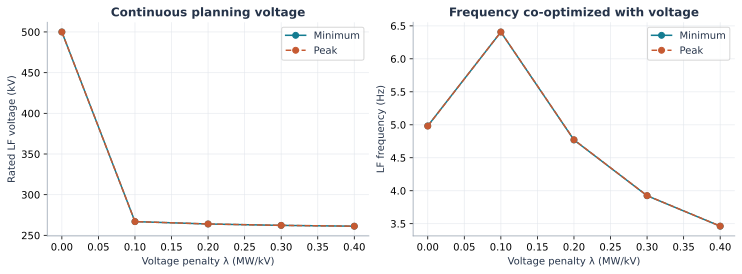
Why voltage and frequency both matter: raising voltage lowers current for the same transfer, reducing I²R loss, but line charging rises with frequency and voltage. The optimizer balances conductor losses, reactive flows, converter losses and capability limits. Lower frequency alone does not guarantee the lowest total loss.
3. Operation — three controlled comparisons
A: fixed 10 Hz, feasible schedules prepared by a distance-based repair of a declared heuristic. The repair minimizes dispatch deviation, not loss; its effort is recorded separately. B: same obligations and 10 Hz, optimize active/reactive dispatch and generator voltage targets. C: the same decisions plus LF frequency. Every case uses the selected 345 kV LF design.
| Case | Decision scope | Frequency (Hz) | Peak loss (MW) | Loss / demand (%) | 24 h loss (MWh) | Peak ΣΔV² (p.u.²) |
|---|---|---|---|---|---|---|
| A | Feasible fixed schedules / PF | 10.000 | 29.271 | 1.381 | 680.910 | 0.004475 |
| B | Dispatch + generator voltage OPF | 10.000 | 26.583 | 1.254 | 628.239 | 0.010112 |
| C | B + frequency optimization | 7.760 | 26.534 | 1.252 | 627.046 | 0.010092 |
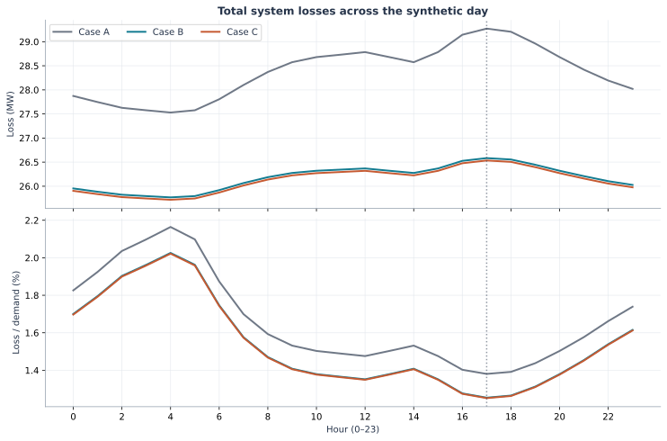
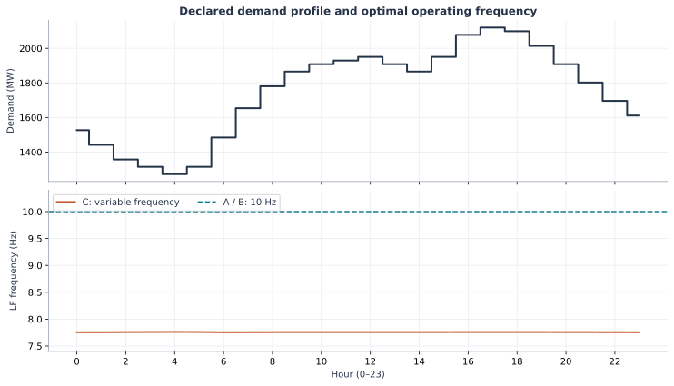
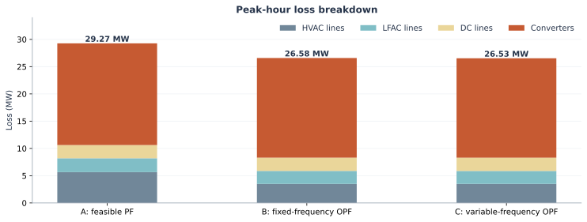
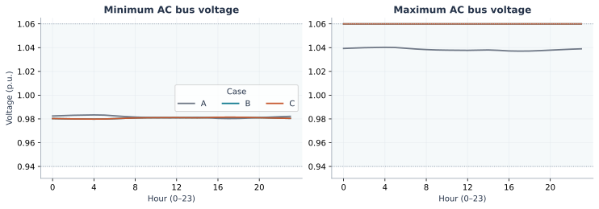
Explicit multi-objective extension
At peak demand we also solve L + βΣ(|V| − 1)² over the 22 AC buses. A larger β buys tighter voltage magnitudes at some loss cost. This is our extension; P1’s operational capacitor-switching penalty is absent because this reconstruction has no controllable capacitor banks.
| β (MW/p.u.²) | Peak loss (MW) | ΣΔV² (p.u.²) | Frequency (Hz) | Max V (p.u.) |
|---|---|---|---|---|
| 0 | 26.534 | 0.010092 | 7.760 | 1.060 |
| 1,000 | 26.984 | 0.002045 | 7.902 | 1.024 |
| 5,000 | 27.504 | 0.001787 | 8.002 | 1.023 |
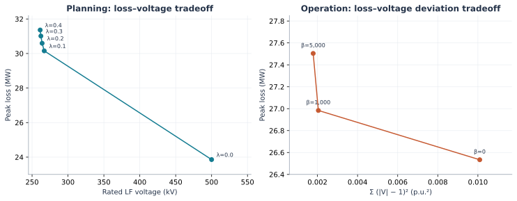
Resistance-model check: keeping line resistance constant at its 10 Hz value (closer to P1’s approximation) gives 7.919 Hz and 26.5415 MW at peak, versus 7.760 Hz and 26.5338 MW with the disclosed R(F) interpolation. Both pass the independent circuit check.
4. Dispatch — Table II analogue
Peak hour 17, Case C. Signs are positive into the AC network, so LF exports have negative AC-side P while HVAC receipts have positive P. The difference in power across each B2B pair is its converter loss. PCC voltage is in per unit on the applicable nominal base; the LF nominal rating is 345 kV.
| B2B pair | HVAC P (MW) | HVAC Q (MVAr) | HVAC V (p.u.) | LFAC P (MW) | LFAC Q (MVAr) | LFAC V (p.u.) |
|---|---|---|---|---|---|---|
| B2B A (VSC4 / VSC6) | 95.467 | 3.122 | 1.033 | -100.449 | -3.467 | 1.000 |
| B2B B (VSC5 / VSC7) | 92.254 | 6.821 | 0.986 | -97.177 | -8.565 | 0.998 |
All seven converter stations — A/B/C peak P, Q, voltage and loss
| Case | Station | PCC bus | P into AC (MW) | Q into AC (MVAr) | PCC V (p.u.) | Converter V (p.u.) | Station loss (MW) |
|---|---|---|---|---|---|---|---|
| A | VSC1 | 5 | -200.000 | -30.007 | 1.012 | 1.062 | 4.182 |
| A | VSC2 | 17 | 89.029 | -3.963 | 0.985 | 0.993 | 2.086 |
| A | VSC3 | 18 | 100.000 | 4.802 | 0.987 | 1.026 | 2.280 |
| A | VSC4 | 3 | 88.794 | -30.005 | 1.012 | 0.948 | 2.165 |
| A | VSC5 | 16 | 98.560 | -10.328 | 0.988 | 0.985 | 2.280 |
| A | VSC6 | 21 | -93.704 | -20.543 | 1.000 | 1.019 | 2.745 |
| A | VSC7 | 22 | -103.755 | 8.532 | 1.014 | 1.200 | 2.915 |
| B | VSC1 | 5 | -200.000 | -1.344 | 1.037 | 1.145 | 3.967 |
| B | VSC2 | 17 | 89.241 | 4.030 | 0.985 | 1.014 | 2.078 |
| B | VSC3 | 18 | 100.000 | 5.917 | 0.985 | 1.027 | 2.284 |
| B | VSC4 | 3 | 96.433 | 3.123 | 1.033 | 1.059 | 2.129 |
| B | VSC5 | 16 | 91.237 | 6.806 | 0.986 | 1.024 | 2.113 |
| B | VSC6 | 21 | -101.520 | -18.422 | 1.000 | 1.053 | 2.958 |
| B | VSC7 | 22 | -96.098 | -11.579 | 1.005 | 1.073 | 2.748 |
| C | VSC1 | 5 | -200.000 | -1.339 | 1.037 | 1.145 | 3.967 |
| C | VSC2 | 17 | 89.241 | 4.016 | 0.985 | 1.014 | 2.078 |
| C | VSC3 | 18 | 100.000 | 5.912 | 0.985 | 1.027 | 2.284 |
| C | VSC4 | 3 | 95.467 | 3.122 | 1.033 | 1.059 | 2.112 |
| C | VSC5 | 16 | 92.254 | 6.821 | 0.986 | 1.025 | 2.132 |
| C | VSC6 | 21 | -100.449 | -3.467 | 1.000 | 1.072 | 2.870 |
| C | VSC7 | 22 | -97.177 | -8.565 | 0.998 | 1.044 | 2.791 |
Generator dispatch at peak demand
| Bus | A: P (MW) | A: Q (MVAr) | A: V (p.u.) | B: P (MW) | B: Q (MVAr) | B: V (p.u.) | C: P (MW) | C: Q (MVAr) | C: V (p.u.) |
|---|---|---|---|---|---|---|---|---|---|
| 1 | 516.161 | 16.642 | 1.010 | 117.501 | -99.397 | 1.023 | 117.868 | -99.455 | 1.023 |
| 2 | 399.993 | -442.672 | 1.000 | 796.060 | -416.188 | 1.023 | 796.645 | -416.104 | 1.023 |
| 6 | 433.688 | -104.684 | 1.000 | 41.728 | -192.725 | 0.983 | 41.736 | -192.736 | 0.983 |
| 7 | 199.810 | -525.000 | 0.991 | 296.981 | -215.918 | 0.983 | 296.878 | -215.897 | 0.983 |
| 8 | 199.852 | 323.614 | 1.020 | 500.000 | 7.264 | 0.983 | 500.000 | 7.269 | 0.983 |
| 11 | 99.872 | -375.000 | 0.980 | 112.617 | -260.016 | 0.981 | 111.769 | -260.058 | 0.981 |
| 13 | 99.896 | 28.299 | 1.020 | 81.698 | -54.329 | 0.983 | 81.638 | -54.311 | 0.983 |
| 20 | 200.000 | -149.964 | 1.000 | 200.000 | -131.870 | 1.000 | 200.000 | -113.163 | 1.000 |
HVAC buses 1 and 6 retain their reference angles; their P and Q are dependent balancing outputs. All generator outputs, including slack generators and fixed LF generation, are checked against declared P/Q/S limits. Controlled generator voltage targets are an explicit extension of P1’s fixed Vsch.
5. Computation — complete OPF and fixed PF work
Four backends execute the same numerical implementation. We time two independent peak OPFs (B and C) from fixed common starts, then a separate batch of exactly 72 saved PF points. Numba compiles GS/Anderson plus converter, DC and outer PF coordination; SLSQP remains Python/SciPy. Threads run independent scenarios, not bus updates inside a GS sweep.
| Workload | Backend | Repeats | Median (s) | Range (s) | Speedup vs our Python |
|---|---|---|---|---|---|
| Two complete OPFs | Python + processes | 3 | 17.388 | 17.299–20.362 | 1.00× |
| Two complete OPFs | Numba serial | 3 | 2.843 | 2.839–3.002 | 6.12× |
| Two complete OPFs | Numba + processes | 3 | 1.988 | 1.778–2.001 | 8.75× |
| Two complete OPFs | Numba + threads | 3 | 1.822 | 1.764–1.911 | 9.54× |
| 72 fixed PFs | Python + processes | 7 | 0.782 | 0.767–0.882 | 1.00× |
| 72 fixed PFs | Numba serial | 7 | 0.128 | 0.123–0.156 | 6.12× |
| 72 fixed PFs | Numba + processes | 7 | 0.071 | 0.069–0.111 | 11.05× |
| 72 fixed PFs | Numba + threads | 7 | 0.072 | 0.066–0.130 | 10.92× |
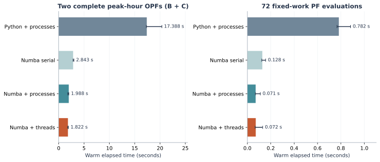
The 17.388 → 1.822 second two-OPF comparison is our Python-process implementation versus our Numba-thread implementation. It does not measure the authors’ runtime. This compile scope is wider than the earlier reconstruction benchmark, which compiled only the AC GS/Anderson kernel. The small 25-bus test does not establish scaling on larger hybrid networks.
Pools are persistent, case data preloaded, method order randomized and all process workers synchronized before warm batches. First runner invocations are saved separately; those timings include an actual first workload and are not isolated startup or universal cold-JIT measurements. Numerical outputs are checked after timing.
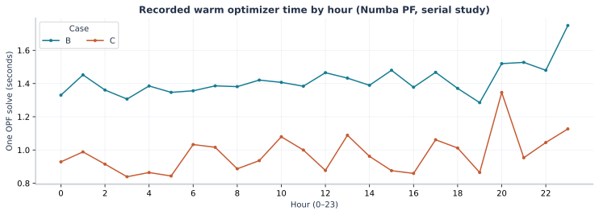
6. Formulation and numerical method
Electrical equations use a 100 MVA per-unit base unless physical units are shown. Rated line-to-line voltage, per-unit bus voltage and DC voltage are different quantities. Power balance signs are consistent throughout. F denotes frequency; f in the rectangular voltage equations denotes the imaginary component of voltage.
Derived state equations, constraints and objectives (24 equations)
E1. Power identity
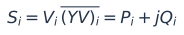
Balanced positive-sequence phasors. The system has 19 HVAC buses, 3 LFAC buses and 3 DC buses. It is multi-frequency, not an unbalanced three-phase model.
E2. Rectangular active balance
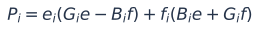
V=e+jf; G and B are the real and imaginary parts of Ybus. G_i and B_i denote row i; products inside parentheses are row-vector products.
E3. Rectangular reactive balance
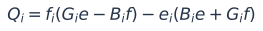
These identities give the state equations corresponding to P1 Eqs. 7 and 8. Here f is the imaginary voltage component; F below denotes operating frequency in Hz.
E4. AC nodal constraints
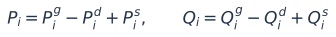
Our converter powers are positive INTO the AC network. Keep this sign convention consistent; do not copy signs from P1 without translating its withdrawn-power convention. There are no controllable shunt banks in this reconstruction.
E5. Voltage and current bases
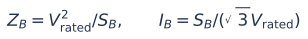
S_B = 100 MVA. V_rated is line-to-line kV, distinct from bus voltage magnitude in per unit. The AC current base uses three-phase apparent power.
E6. LFAC line parameters
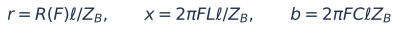
Two 1000 km lines; L = 1.0007 mH/km, C = 11.5407 nF/km. Nominal-pi series impedance r+jx and charging jb/2 at each end. R(F) is a disclosed piecewise-linear interpolation through the DC, 10 Hz and 60 Hz values, not a rerun of the authors' line-constants model.
E7. Relation to P1 scaling
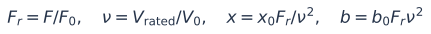
Our F0 = 10 Hz, V0 = 500 kV preserve the P3 reconstruction reference point. P1 uses a 60 Hz frequency base and defines its voltage ratio as the squared voltage ratio. With constant physical resistance, r=r0/nu²; our primary run additionally updates R(F).
E8. Converter transformer current
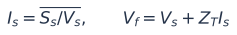
Transformer KVL with converter-to-AC current positive. The capacitive-filter interpretation from the reconstruction is retained.
E9. Converter filter KCL and reactor KVL
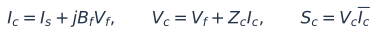
The printed P3 Eq9 and Table3 filter notation are not used literally; those interpretations were audited in the previous reconstruction.
E10. LF station parameter referral
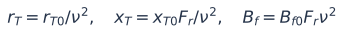
The reactor follows the same R/X referral. Physical R, L, C are held fixed as a declared benchmark extrapolation. HVAC station parameters stay at their 60 Hz reference. Candidate converter voltage capability scales with candidate design voltage; no OEM design equivalence is claimed.
E11. Converter losses and DC withdrawal
For LF stations Iref=|Ic|/nu, referred to the 500 kV reference current. a0=.011033, a1=.00346; a2=.0044 (rectifier) or .0066 (inverter). Transformer/reactor Joule loss is Re(ZT)|Is|²+Re(Zc)|Ic|²; it is already included in Re(Sc)-Ps and is not counted twice. Values of a and powers use the 100 MVA per-unit base.
E12. DC and B2B power balance
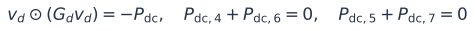
Positive Pdc denotes withdrawal from a DC link. The 3-terminal DC grid keeps v24=1.0 p.u.; its unknown slack withdrawal determines VSC2 active power. VSC4 and VSC7 active powers are dependent B2B balance outputs.
E13. Physical terminal line currents
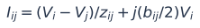
Check BOTH line-end currents, including charging. Convert AC currents to amperes with the applicable line-voltage current base. The 500 kV HVAC tie current base differs from the 345 kV internal branch base.
E14. Generator bounds
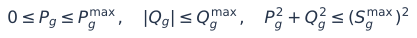
All ratings are declared synthetic assumptions. Non-slack Pg is controlled; slack Pg and voltage-controlled Qg are PF outputs. They remain subject to the same bounds.
E15. Voltage and converter limits
DC voltages are bounded 0.95–1.05 p.u. The 2.1 p.u. reference current bound is 1.05 × an assumed 200 MVA station rating divided by 100 MVA. Seven generator voltage targets are controlled within 0.96–1.04 p.u.; this extends P1's fixed generator Vsch. Both-end line-current and active-power limits also apply; ratings are listed in the assumptions table.
E16. Fixed transfer obligations
The optimizer cannot reduce the required LF generation/DC transfers to zero to obtain an artificial loss saving. VSC5 allocates the LF delivery between its two receiving connections; dependent flows are constrained to the intended directions.
E17. Total losses
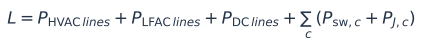
Independent conservation check: total generation minus fixed demand equals L. Fixed demand makes minimization of generation equivalent to minimization of total losses.
E18. Planning objective, P1-style
Compute separate minimum-load and peak-load solutions for lambda = 0, .1, .2, .3, .4 MW/kV. This corresponds to P1's generation-plus-voltage weighted objective up to a demand-dependent constant. These weights are not economic capital costs. Unlike P1 planning, this study retains line operating limits.
E19. Planning ranges
The range matches P1's numerical study. It assumes equipment appropriate to the studied frequency; V/f magnetic, transient, protection and OEM constraints have not been modeled. Choose the next declared design voltage above the peak lambda=.1 solution, then verify all operation points.
E20. Operation objectives
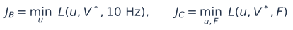
A evaluates given feasible schedules at 10 Hz; B optimizes dispatch at 10 Hz; C also optimizes frequency. All use the same selected voltage rating, demand and transfer obligations. No capacitor-switching term exists because this case has no dispatchable capacitor banks.
E21. Optional operational multi-objective extension
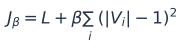
Separate peak-hour tradeoff for beta = 0, 1000, 5000 MW/p.u.². This objective is our extension, not P1's capacitor-switching objective; it does not replace the main B/C loss comparison.
E22. PF-constrained reduced optimization
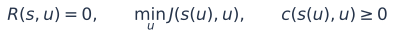
The inner sequential PF determines dependent state s. The outer SciPy SLSQP optimizer operates on bounded controls, scaled to a unit box; shared central finite differences supply objective/constraint derivatives. This is a continuous local NLP, not P1's custom mixed-integer PCPDIPM solver.
E23. In-place Gauss-Seidel bus update
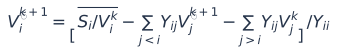
Earlier bus values in the sweep are already updated; later bus values are from the previous sweep. At a PV bus, Q is recovered from the current nodal injection before the update, then its specified magnitude is restored. Slack buses are skipped. This is why arbitrary parallelization of bus updates would change the method.
E24. GS sweep and Anderson acceleration
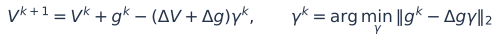
g is the in-place GS fixed-point residual. History depth 8, coefficient threshold 1000, PV magnitude projection, P/Q mismatch tolerance 1e-10 p.u., DC/B2B interface tolerance 1e-9 p.u. Same Python source and Numba compilation; no fastmath, no machine learning inference. Threads operate across independent scenarios, not GS bus updates.
Algorithm and implementation details
- Build the 19-bus HVAC admittance matrix with its AC tie; choose the two fixed HVAC reference phasors. For each candidate LF rating/frequency, rebuild its line and station parameters and 3-bus admittance.
- Apply controlled Pg, converter P/Q and voltage targets. Solve HVAC and LFAC PF by in-place Gauss–Seidel with Anderson history depth 8; keep PV magnitudes and reference buses fixed.
- Recover voltage-controller reactive injections and LF slack power. Calculate station terminal currents, voltages and losses from KCL/KVL.
- Solve the 3-terminal DC network with DC24 voltage fixed; update VSC2 P to balance it. Enforce the two B2B DC-link balances through dependent VSC4 and VSC7 P. Repeat AC/DC coordination until the interface residual is below 1e−9 p.u.; inner AC mismatch is below 1e−10 p.u.
- Calculate objective and all terminal/current/rating constraints. SLSQP updates unit-box-scaled controls using shared central finite differences (step 1e−4 in scaled coordinates). Acceptance requires solver success, physical feasibility and conservation; no global optimality claim.
- For reproducibility, no fastmath or bus-order change is used. Numba runs the same core function with
njit(cache=True, nogil=True). Only independent tasks are assigned to workers.
7. Assumptions, provenance and verification
| Component | What is used | Status |
|---|---|---|
| Network | P3 Fig. 6: 19 HVAC, 3 LFAC, 3 DC buses; 7 VSCs | Published topology; reconstructed electrical inputs |
| HVAC electrical data | Public Stagg 5 / IEEE 14 topology; 50 km internal lines at 345 kV; P3 appendix RLC extrapolated to internal geometry | Declared reconstruction assumptions |
| Loads | Public loads multiplied by 5, then the declared hourly factor; peak 2120 MW | Not the authors’ modified case or utility measurements |
| Long lines / DC | Two 1000 km LF lines, 1000 km HVAC tie; nominal-pi AC; assumed two-conductor DC resistance | P3-derived parameters plus disclosed assumptions |
| Equipment ratings / forecast | Synthetic generator and line bounds, 200 MVA reference converter family, coincident 24 h profile | Benchmark scenario, not OEM or author data |
| PF algorithm | Sequential AC/converter/DC coordination + GS/Anderson; retained reference angles at HVAC buses 1/6 and LF bus 21 | Our implementation; not the authors’ source code |
| OPF | P1-style loss/voltage objectives, continuous controls, SciPy SLSQP | Adaptation, not the P1 custom mixed-integer solver |
| Constraint | Declared bounds / assumption |
|---|---|
| AC / DC bus voltage | 0.94–1.06 p.u. / 0.95–1.05 p.u. |
| Generator controlled Vm | 0.96–1.04 p.u.; added as an explicit extension of P1’s fixed Vsch |
| Generator Pmax (buses 1,2,6,7,8,11,13,20) | 1250, 1500, 1662, 700, 500, 500, 500, 250 MW |
| Generator Q / S | HVAC Qmax = 0.75 Pmax; LF Qmax = 400 MVAr; Smax = √(Pmax²+Qmax²) |
| Converter current / voltage | Iref ≤ 2.1 p.u. on 100 MVA reference base; converter voltage 0.85–1.20 p.u. |
| Line current (both ends) | HVAC 1500 A, LFAC 1000 A, DC 1000 A |
| Line active power (both ends) | HVAC 1000 MW, LFAC 600 MW |
| Planning ranges | 69–500 kV, 1–60 Hz; same operating limits also retained in planning |
| Converter Q controls / VSC5 P | ±150 MVAr / 0–200 MW; dependent transfer directions constrained |
| Check | Evidence |
|---|---|
| Feasible operating points | 72 / 72, checked against all declared input and state constraints |
| Planning solutions | 10 / 10, SLSQP successful and checked against declared constraints |
| Constraint records | 12,816 satisfied records; numerical acceptance margin −1e−6 |
| Power conservation | Max |ΣPg − Pd − L| = 2.256e-08 MW |
| Independent PF validation | Expanded-circuit simultaneous solve, separate flat start: all 10 planning and 6 min/peak operating points |
| Independent voltage agreement | Max operating-point difference = 9.904e-12 p.u. |
| Legacy case regression | Same inputs at 500 kV / 10 Hz reproduce the previous reconstruction within 1e−7 p.u. |
| Backend comparison | All 40 timed batches passed objective / phasor comparisons; source and tolerances held fixed |
| Alternative local starts | 5 Hz / 20 Hz starts at min and peak: final loss agreement within 2e−7 MW; no global certificate |
The adopted LF line model is nominal-pi with R(F) interpolated through 0, 10 and 60 Hz, and fixed physical L/C. The converter family uses physical R/L/C referred from the 500 kV / 10 Hz reference; its current and loss normalization remains tied to reference current. Changing design voltage presumes appropriate station voltage capability. These assumptions let us run a controlled steady-state experiment; they do not establish magnetic V/f limits, transformer/converter hardware costs, EMT stability, protection adequacy or OEM feasibility.
There are no capacitor decisions, discrete design choices inside the optimizer, generator ramps, storage dynamics or ML inference. Planning applies operating line limits too, unlike P1’s planning formulation. We cannot call the solver a replication of P1’s mixed-integer predictor-corrector primal-dual interior-point method. Numerical feasibility is accepted to 1e−6 in constraint units; some active limits have tiny negative roundoff margins.
A defensible statement for the professor
“I implemented a reduced-space, P1-style planning and operation study on a disclosed reconstruction of the P3 25-bus network, using sequential GS–Anderson PF. Ten planning and 72 operating points satisfy our declared steady-state limits. Dispatch provides most of the loss reduction; variable frequency gives a smaller incremental gain. Compiling the full PF core and threading independent OPF scenarios speeds up our implementation. The next validation step is the authors’ case data and actual equipment constraints.”
Source papers
P1: Nguyen & Santoso, Optimal Planning and Operation of Multi-Frequency HVac Transmission Systems, IEEE TPWRS 36(1), 2021. DOI / publisher; local source PDF.
P3: Kim, Nguyen & Santoso, A sequential power flow algorithm…, 2026. DOI / publisher; local source PDF. See the previous reconstruction audit for missing inputs and converter notation.
8. Reproduce and inspect the results
All figures are saved as SVG and PNG; tables and individual results are CSV/JSON. Code is in the parent directory. The README specifies dependencies, execution order and modeling differences.
python experiments/03_sequential_opf/run_study.py python experiments/03_sequential_opf/run_tradeoff.py python experiments/03_sequential_opf/benchmark_opf.py --opf-repeats 3 --pf-repeats 7 python experiments/03_sequential_opf/make_report.py
- Planning Table I data
- B2B Table II analogue
- All peak converter values
- All peak generator values
- 24 h A/B/C results
- All hourly converter dispatch
- All hourly generator dispatch
- All bus voltages
- Every operating constraint
- Baseline preparation time
- Runtime table
- Every timing sample
- First runner invocations
- Benchmark protocol
- Operational objective tradeoff
- R(F) sensitivity
- Independent operating verification
- Planning controls and verification
- All saved control vectors
- Solver status for every point
- Complete assumptions
- Equations as text
- Numerical source hashes